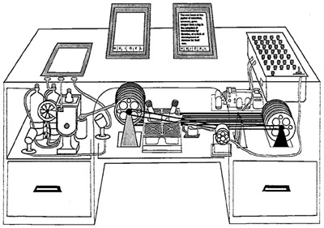

Vannevar Bush wrote the essay "As We May Think" in 1945, but did he predict what would happen in the future. Throughout the essay Bush's describes a techology that works in a similar way as the Web. Bush called the techology the memex. The memex records information that would then be stored on microfilm.
